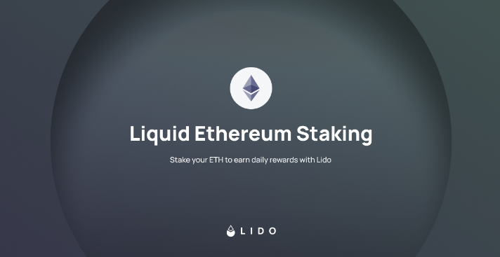
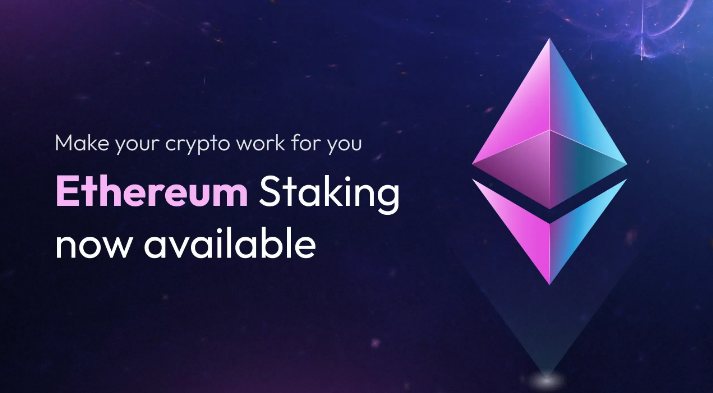

Lido Staking is a decentralized finance (DeFi) protocol thatoffers a way for users to stake their Ethereum (ETH) holdings and participatein Ethereum 2.0, the upcoming upgrade to the Ethereum blockchain. Staking inEthereum 2.0 involves locking up ETH as collateral to support the network'ssecurity and consensus mechanism, and in return, stalkers receive rewards inthe form of newly created ETH and transaction fees. However, Ethereum 2.0staking requires users to maintain a minimum amount of 32 ETH, which can be abarrier for many smaller investors.
Lido stacking aims to make staking on Ethereum 2.0 moreaccessible by allowing users to stake any amount of ETH, regardless of whetherit's above or below the 32 ETH threshold.
Lido has gained popularity in the DeFi space as itprovides a convenient way for users to participate in Ethereum 2.0 stakingwithout the need to manage a validator node or meet the high minimum stakingrequirements. However, users should conduct their research and due diligencebefore participating in any DeFi protocol, as there are always risks associatedwith such platforms. Additionally, it's important to note that the informationprovided here is accurate as of my last knowledge update in September 2021, andthere may have been developments or changes in the Lido protocol since then.
Lido is a decentralized finance (DeFi) protocol thatoffers a way for users to stake their Ethereum (ETH) holdings and participatein Ethereum 2.0, the upcoming upgrade to the Ethereum blockchain. Staking inEthereum 2.0 involves locking up ETH as collateral to support the network'ssecurity and consensus mechanism, and in return, stalkers receive rewards inthe form of newly created ETH and transaction fees.
However, Ethereum 2.0staking requires users to maintain a minimum amount of 32 ETH, which can be abarrier for many smaller investors. Lido aims to make staking on Ethereum 2.0more accessible by allowing users to stake any amount of ETH, regardless ofwhether it's above or below the 32 ETH threshold.
Here's how Lido stakingworks:1. Tokenization of Staked ETH: When users stake theirETH with Lido, their ETH is converted into a token called "stETH"(Staked Ether). This token represents a share in the ETH staked by Lido on theEthereum 2.0 network.2. Liquid Staking: stETH is a liquid token, meaning itcan be traded, transferred, and used in DeFi applications while stillparticipating in Ethereum 2.0 staking. This allows users to maintain liquidityand access their staked ETH for other purposes.3. Staking Pool: Lido operates a staking pool whereusers' ETH is combined with that of other participants.
This aggregated ETH isthen staked as a single entity on Ethereum 2.0 to reach the required 32 ETHthreshold. This pooling of resources reduces the barriers to entry for smallerinvestors.4. Rewards Distribution: Users who stake their ETH withLido receive staking rewards in the form of additional stETH tokens.
Theserewards are distributed proportionally based on the amount of stETH each userholds in the pool.5. Risk and Security: Users should be aware thatstaking involves some level of risk, including the possibility of losing partor all of the staked funds due to slashing penalties for network misbehavior.
Lido aims to minimize these risks through its robust infrastructure andsecurity measures.Lido has gained popularity in the DeFi space as itprovides a convenient way for users to participate in Ethereum 2.0 stakingwithout the need to manage a validator node or meet the high minimum stakingrequirements. However, users should conduct their research and due diligencebefore participating in any DeFi protocol, as there are always risks associatedwith such platforms.
Additionally, it's important to note that the informationprovided here is accurate as of my last knowledge update in September 2021, andthere may have been developments or changes in the Lido protocol since then.
Upon conclusion of the auction, lido staking and the bonding curves will go live on all seven chains (Ethereum, Polygon, Avalanche, BNB Chain, Fantom, Arbitrum and Optimism). Assuming the auction phase ends at the hard cap, bonding curves will run from $0.50 - $1.50.
